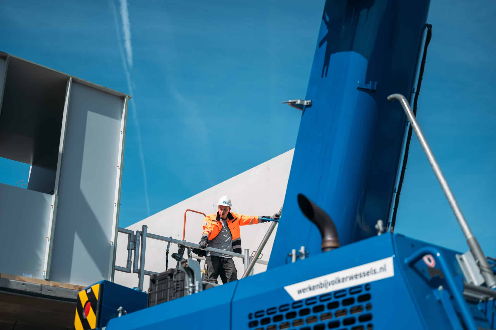
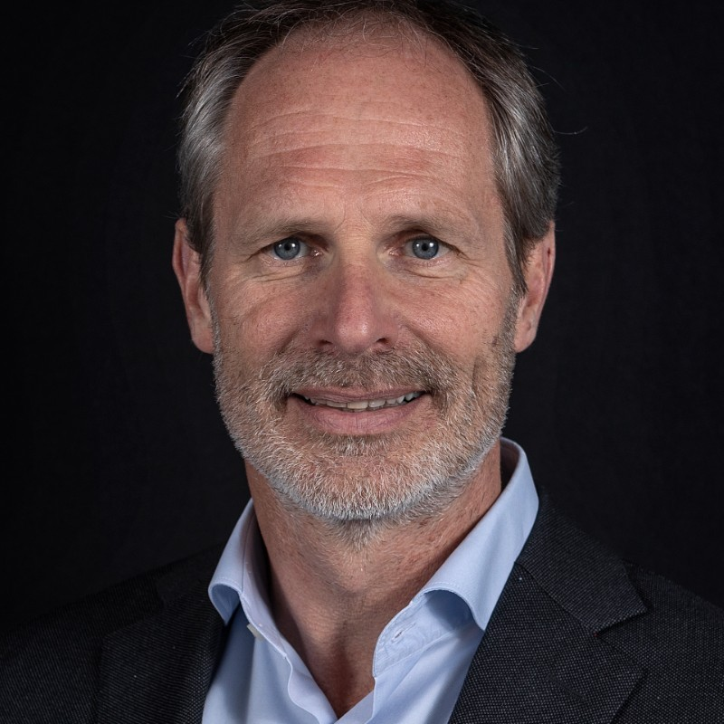
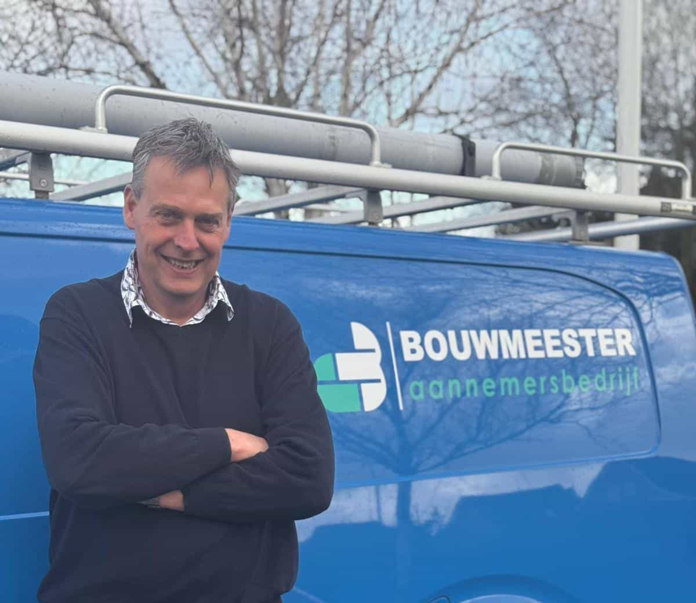
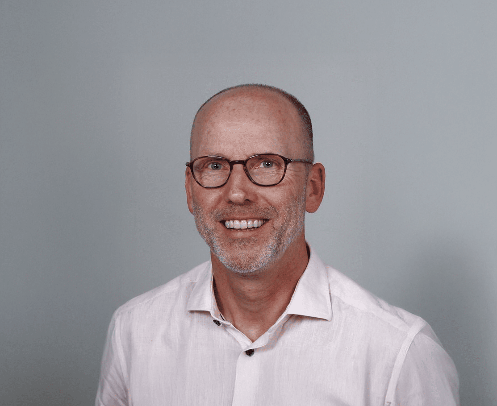
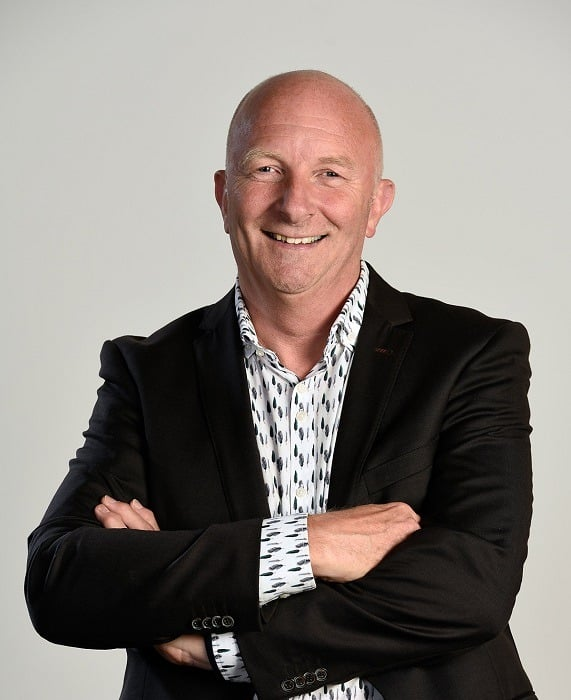
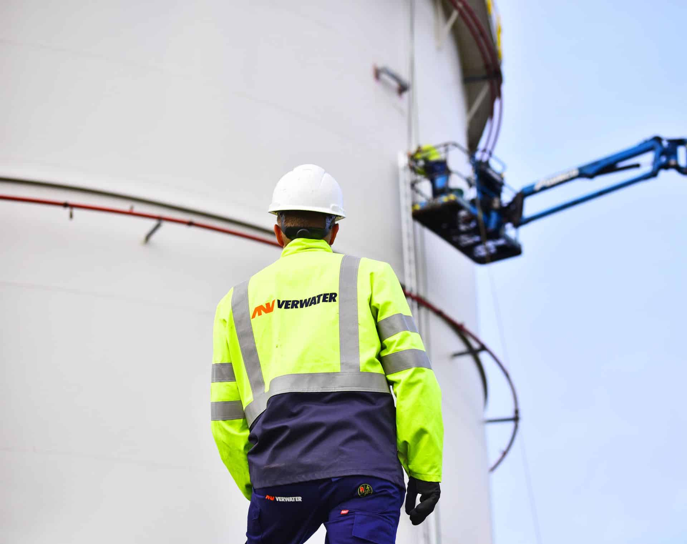
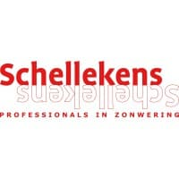

Bij DIS Group geloven we dat succesvolle samenwerkingen de basis vormen voor duurzame resultaten. Op deze pagina delen we een aantal referentie projecten en samenwerkingen waar we trots op zijn.
In onze referenties lees je hoe wij organisaties ondersteunen bij vraagstukken over hun erp systeem. Van implementaties en optimalisaties tot langdurige samenwerkingen: elk verhaal geeft een inkijkje in de uitdagingen, oplossingen en resultaten die we samen met onze klanten hebben gerealiseerd.
Laat je inspireren door de ervaringen van onze klanten en ontdek hoe wij organisaties helpen om het maximale uit hun 4PS Construct en/of Business Central ERP systeem en data te halen.
Heb jij ook een vraagstuk met betrekking tot ERP systemen? Bekijk dan eens onze diensten pagina of neem rechtstreeks contact met ons op via het contactformulier.
VolkerWessels BVGO-ICT

'' Er is ruimte voor humor, maar vooral veel deskundigheid. ''
Lees meer
VpG Techniek

''Ze zijn er wanneer we ze nodig hebben, maar denken ook vooruit''
Lees meer
Bouwmeester

''Klantvriendelijk, betrouwbaar, betrokken, korte lijnen''
Lees meer
Faber Betonpompen

“ Onze serviceprocessen zijn duidelijk geoptimaliseerd ”
Lees meer
VolkerWessels Infra Digital
''DIS doet wat ze zeggen en zijn goed bereikbaar''
Lees meer
Vrolijk Groep

“Flexibel, efficiënte toevoeging, deskundig, snel schakelen”
Lees meer
Winters bouw & ontwikkeling

“Daadkrachtige consultants met veel kennis in huis”
Lees meer
Remondis

“Snel resultaat door gerichte 4PS ondersteuning”
Lees meer
AQ Group

Lees meer
Bluewater

'' We hebben nu meer expertise in huis ''
Lees meer
Hanab
“De kracht ligt in het praktisch vertalen naar de praktijk ''
Lees meer
Verwater

'' DIS is een partij die afspraken nakomt ''
Lees meer
Schellekens & Schellekens

"Flexibel, kennis van zaken en makkelijk benaderbaar"
Lees meer